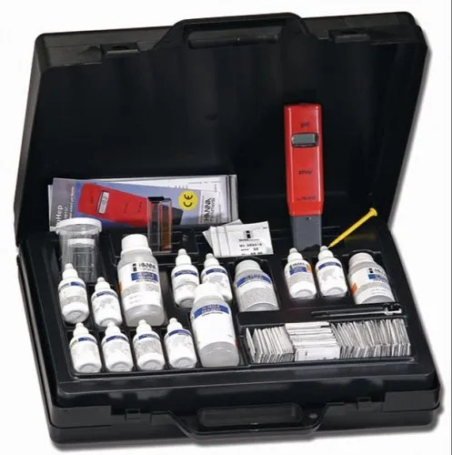

Water treatment test kits are essential tools for monitoring and analyzing the quality of water. These kits help to measure various parameters like pH, hardness, chlorine, TDS, and more. Explore the features, process, and applications of water treatment test kits below.
Overview
Water treatment test kits are designed to measure the chemical and physical properties of water. These kits help in ensuring that water meets safety standards and is fit for consumption or industrial use. They are commonly used in water purification systems, municipal water treatment plants, and by individuals for home water testing.
Features
- Easy to Use: Simple and quick methods for testing water quality at home or in the field.
- Comprehensive Parameters: Tests for pH, hardness, chlorine, TDS, bacteria, and more.
- Cost-Effective: Affordable solutions for regular water quality checks without the need for expensive lab tests.
- Portable: Compact and portable, ideal for field testing in remote areas.
- Accurate Results: Provides accurate readings for ensuring safe water quality.
Process
The process of using water treatment test kits typically involves the following steps:
- Collect Sample: Take a sample of the water to be tested in a clean container.
- Add Reagents: Add the specific reagent or test strip to the sample water as instructed in the kit's manual.
- Wait for Reaction: Allow the reaction to occur based on the type of test being conducted. This can take from a few seconds to several minutes.
- Read Results: Compare the color change or use a testing meter to determine the concentration of the desired parameter.

Applications
- Residential: Used by homeowners to test the quality of drinking water and ensure it's safe.
- Industrial: Essential for industries to monitor water used in manufacturing processes or cooling systems.
- Aquaculture: Used to test water in fish tanks and ponds to ensure the health of aquatic life.
- Agriculture: Helps farmers check water quality for irrigation systems and crop production.
- Municipal Water Treatment: Used in water treatment plants to maintain regulatory standards and ensure safe drinking water.